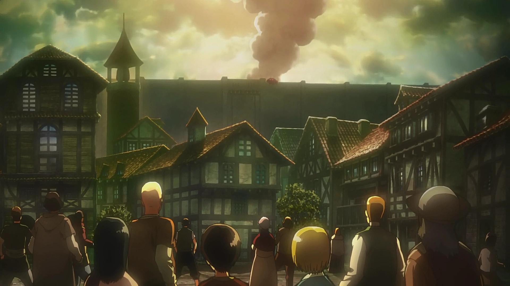
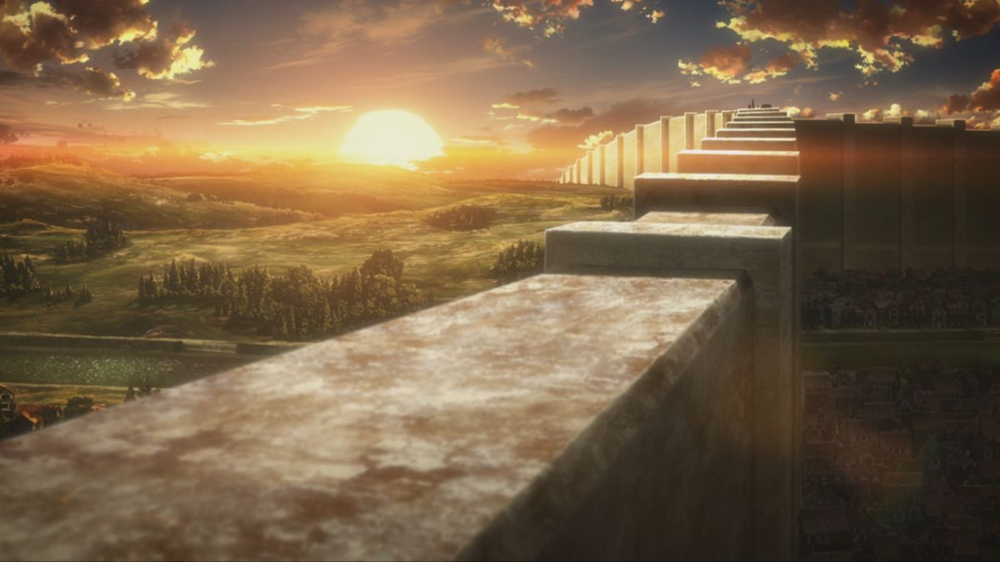
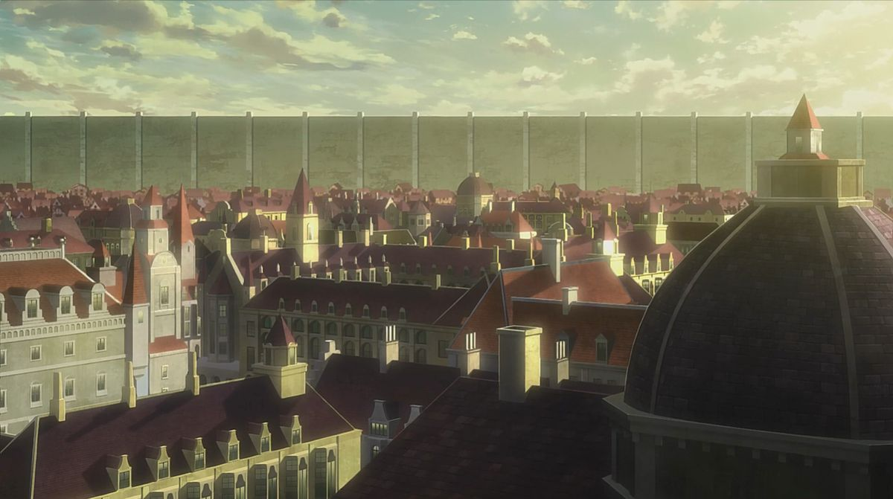

Walls
About the walls
The Walls are three enormous structures built to protect humanity from the threat of Titans. Located on Paradis Island, they provided shelter for the population for over a century, allowing civilization to survive within their boundaries. Arranged in three concentric circles, the Walls divide human territory into different regions. Each one serves as a line of defense, with the outermost Wall protecting the largest area and the innermost surrounding the center of political and royal power. For generations, the Walls represented safety and the limits of the known world. Their existence shaped society, politics, and the daily lives of everyone living within them.

Wall Maria
Wall Maria is the outermost of the three Walls and surrounds the largest portion of human territory. It was the first line of defense against the Titans, protecting several districts and settlements. Its fall began when the Colossal Titan breached the outer gate of Shiganshina District, allowing Titans to enter the territory. The event forced humanity to abandon the region and retreat behind Wall Rose, marking one of the most devastating moments in the history of the Walls.

Wall Rose
Wall Rose is the middle Wall, located between Wall Maria and Wall Sina. After the fall of Wall Maria, it became the outermost line of defense and sheltered the survivors who had lost their homes. It contains several districts and settlements, including Trost District. Wall Rose also became the center of a major crisis when humanity believed that Titans had managed to breach it, threatening the safety of its inhabitants.

Wall Sina
Wall Sina is the innermost and smallest of the three Walls. It surrounds the capital, Mitras, and protects the central region where the royal family and the ruling government reside. Unlike the outer territories, the area within Wall Sina is home to the wealthiest and most influential members of society. It represents the political center of humanity and the privileges enjoyed by those living closest to the capital.